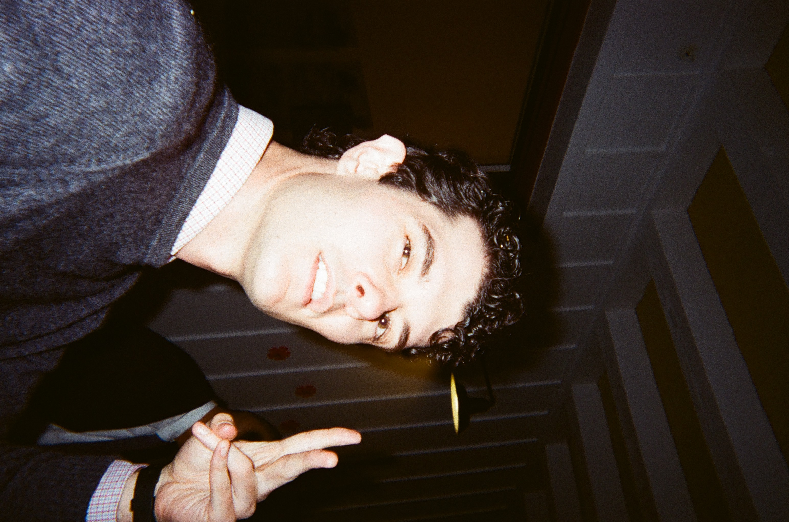

About My Research
Over the past decade, I've integrated data science, cognitive science, and media theory to empirically research narrative interaction and belief dynamics on the internet. I've mined millions of posts across numerous social media platforms, run experiments with individual participants and networked groups, fit computational models of human thinking and decision-making, and developed open-source AI software for psychological modeling from language data.
I actively apply research findings to develop spatial and digital interventions that increase narrative alignment among humans. I've acquired a unique array of digital research skills, which I apply to solve complex business problems and build collaborations with industry partners, artists, and academic researchers.
I began working in data science in 2015 when I developed software to download and analyze social media posts from Twitter related to politics and the stock market. While earning my BS in Mathematics at Arizona State University, I worked as a research assistant in Dr. Zach Horne's Computation, Cognition, and Development Lab (now at University of Edinburgh), developing data science and Natural Language Processing tools predicting belief change on Reddit and running attitude surveys and experiments to study human reasoning.
From 2019 to 2025, I pursued a PhD in Cognitive Science at UCLA working under Dr. Keith Holyoak and the Reasoning Lab, where I developed cutting-edge AI tools, experiments, and statistical methods to analyze narrative and behavioral dynamics on the internet. I'm currently a Postdoctoral Fellow at UCLA, continuing empirical and data science research on narrative dynamics, networked communication, and new media interaction, and applying my behavioral paradigms and technical skillset to solve practical business problems and foster interdisciplinary collaborations spanning industry, the arts, and sciences.
I am eager to connect and learn from others. Please reach out via priniski@ucla.edu if you would like to work together or have a conversation about the narratives and networks increasingly consuming our lives.
